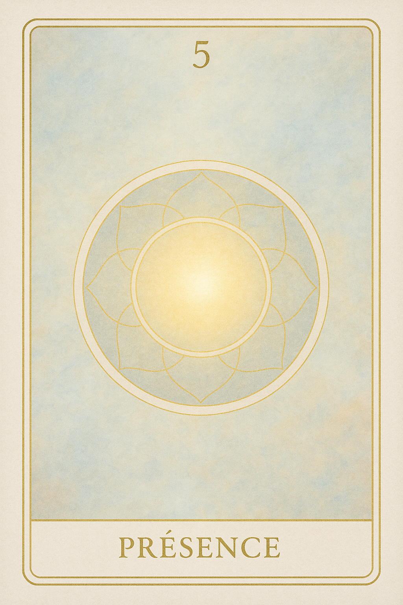
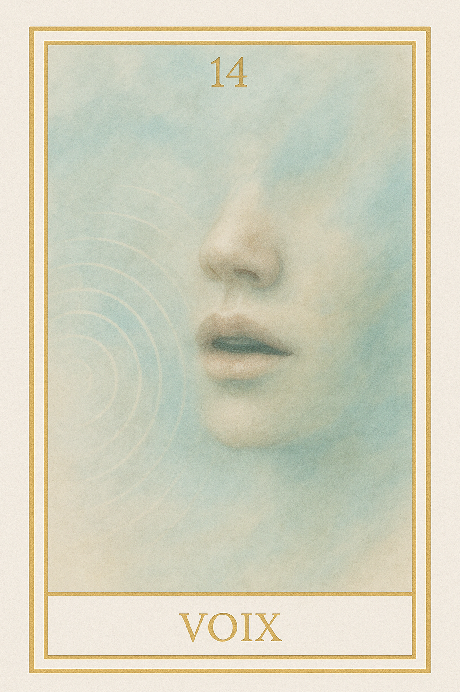
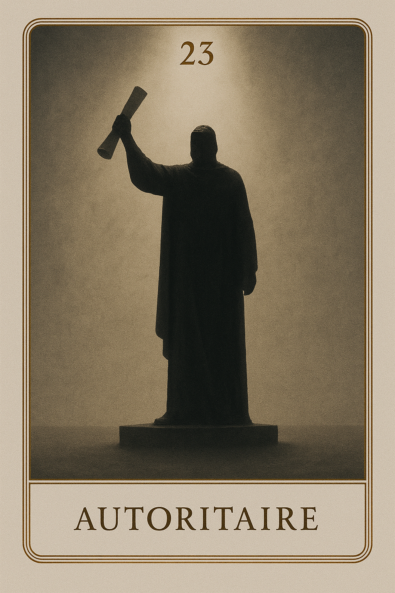
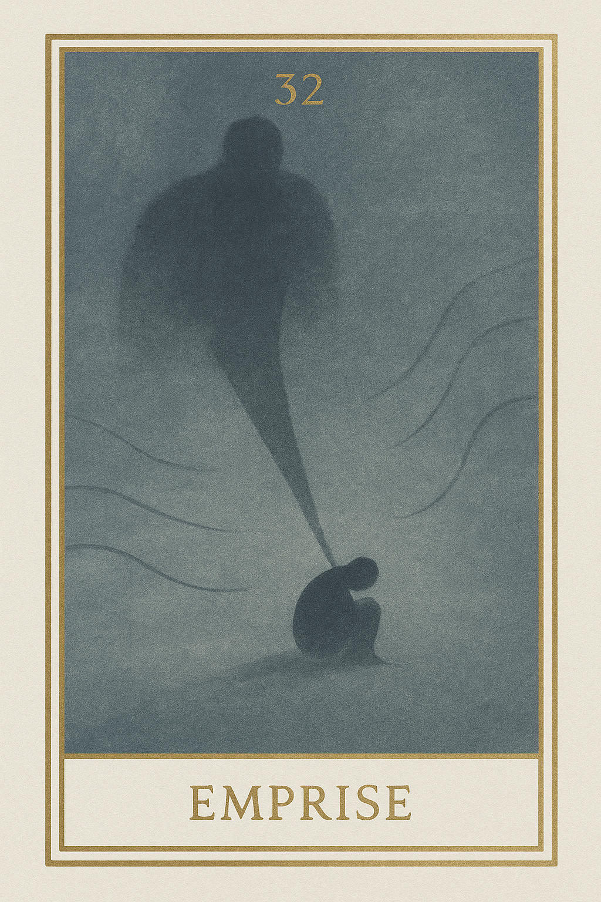
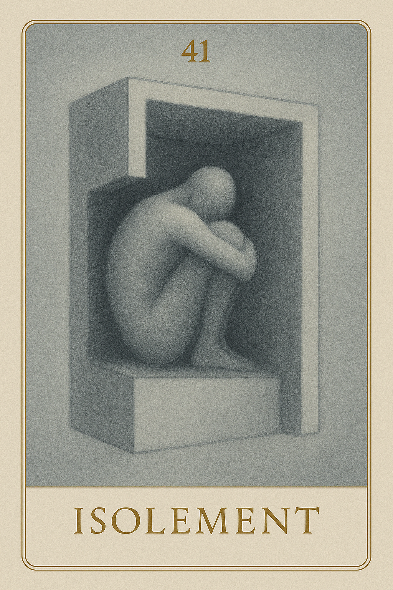
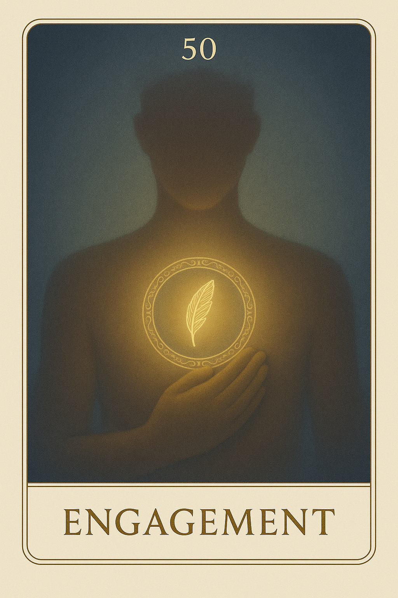
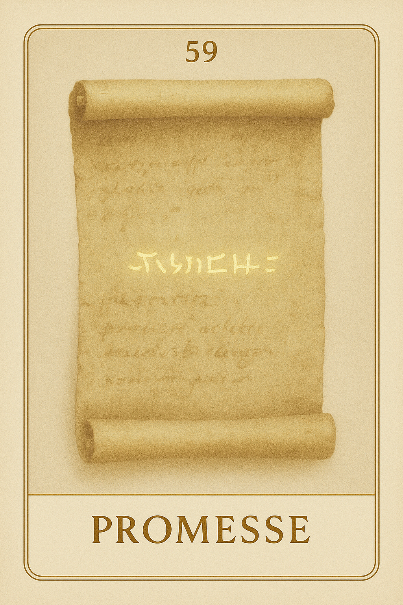
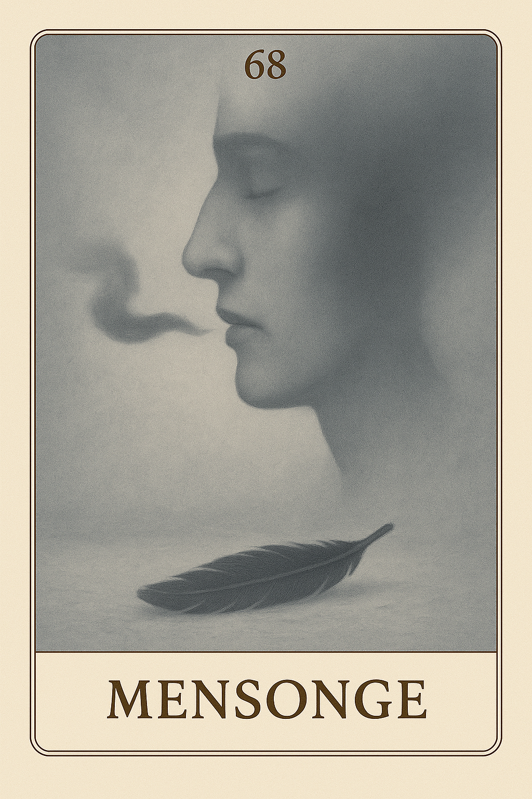
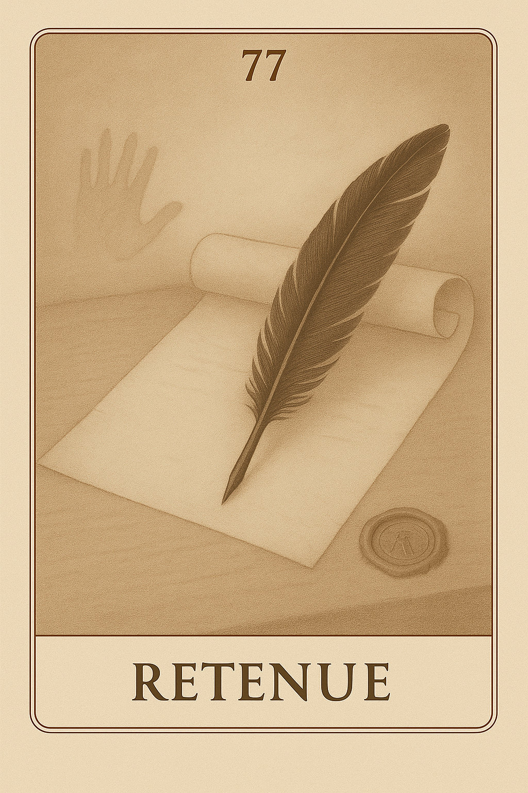

Famille 5 – Thot (Mercure)
Reliée à Mercure et à Thot, la famille 5 de l’oracle Seshat interroge notre rapport à la parole, à la loi intérieure et à la cohérence entre pensée, vérité et expression.
Carte 5 – Présence
Mots-clés : présence intérieure, rayonnement silencieux, confiance en soi, être sans agir, autorité naturelle
Chiffre caché : 194
Lecture inversée : 4 → 9 → 1
Divinité principale : Thot
Planète secondaire : Soleil
Divinité secondaire : Râ
Interprétation de la carte 5 : Présence (droite)
Lecture intuitive rapide
Il n’y a rien à dire. Juste être là, entier, sans performance. Le monde te perçoit sans que tu t’exprimes. Ta seule présence modifie déjà l’espace. Avant le geste, avant la parole, il y a cette qualité invisible qui dit que tu es là, conscient d’être là. Ce n’est pas encore une posture, ni un rôle. Ce n’est même pas un choix. C’est l’instant où tu prends forme dans le silence, et où ce silence, par lui-même, communique.
1. Caractère de la personne
Tu n’as rien à faire pour être là. Ta présence suffit. Elle pose un espace, une gravité douce. Ce que tu portes parle de toi, même si tu ne dis rien.
2. Plan affectif
Tu n’as pas besoin de plaire, ni de t’effacer. Ta simple présence peut être un lien, si tu l’assumes sans masque. C’est le début de l’ouverture : l’autre te sent, avant de te connaître.
5. Plan spirituel
Le verbe n’est pas encore né, mais l’être est là. Tu portes en toi la lumière d’avant le mot. C’est une autorité silencieuse, une posture non posée, un rayonnement sans discours.
Carte 5 : Présence (inversée)
1. Caractère de la personne
Tu doutes de ta légitimité à exister sans faire. Alors tu compenses, tu t’agites, tu cherches à être vu. Mais plus tu cherches à prouver ta place, plus tu te retires de toi-même.
2. Plan affectif
Tu crois devoir séduire ou t’excuser d’être là. Mais l’amour ne commence pas dans la stratégie. Il commence dans l’acceptation d’être senti, sans artifice.
5. Plan spirituel
Tu veux comprendre avant de rayonner. Mais ta lumière ne naît pas d’un concept. Elle naît de ta simple disponibilité au réel. Reviens à cette simplicité.
Résumé de la carte 5 : Présence
Présence est l’état d’être perçu avant d’agir. C’est ce que ton être communique,sans mots, sans effort, sans volonté. C’est le seuil silencieux d’où naît toute parole juste. Être là suffit.
Carte 14 – Voix
Mots-clés : : parole intérieure, expression de soi, trouver sa voix, communication authentique, vérité personnelle
Chiffre caché : 221
Lecture inversée : 1 → 2 → 2
Divinité principale : Thot
Planète secondaire : Terre
Divinité secondaire : Geb
Interprétation de la carte 14 : Voix (droite)
Lecture intuitive rapide
Tu n’as plus envie de te taire. Tu n’as peut-être pas les mots justes, ni le ton parfait — mais ce n’est plus le plus important. Tu veux dire. Laisser passer ta vibration, même fragile. Parce que cette voix, c’est toi. Et tant que tu ne l’honores pas, tu restes en dehors. Parle. Même tremblant, même brouillon. Car c’est dans l’expression que tu reprends forme.
1. Caractère de la personne
Tu prends la parole. Pas pour convaincre, ni pour expliquer, mais pour affirmer que tu es là. Ce premier mot, brut, imparfait, te constitue déjà.
2. Plan affectif
Tu commences à dire ce que tu ressens. Peut-être maladroitement, mais sincèrement. C’est un seuil : celui où ta vérité cherche un passage.
5. Plan spirituel
C’est le moment où ta voix sort du silence. Elle ne porte pas encore un enseignement, mais elle trace ton existence dans l’espace. Tu ne répètes pas : tu dis.
Carte 14 : Voix (inversée)
1. Caractère de la personne
1. Caractère de la personne
Tu retiens ta voix. Par peur d’être mal compris, ou de ne pas “bien” dire. Mais ne pas parler, c’est déjà s’effacer. Tu as le droit de tâtonner.
2. Plan affectif
Tu ravales ce qui monte. Tu penses que ce n’est pas le bon moment. Pourtant, ce que tu contiens pèse davantage que ce que tu pourrais dire.
5. Plan spirituel
Tu attends que les mots soient parfaits avant de les dire. Mais l’âme ne parle pas en formules : elle parle quand elle doit. Laisse passer la voix, même si elle tremble.
Résumé de la carte 14 : Voix
Voix est la carte de la parole naissante. C’est le moment où la vérité prend forme dans le son, où l’on commence à dire “je”, sans encore tout comprendre. Elle ne demande pas de convaincre : seulement de dire, de faire entendre sa vibration. Elle dit : “Parle. Même si ce n’est pas encore clair, ta voix a déjà sa justesse.”
Carte 23 – Autoritaire
Mots-clés : : parole imposée, rigidité relationnelle, autorité verbale, décalage parole/vérité, transmission sans alignement
Chiffre caché : 185
Lecture inversée : 5 → 8 → 1
Divinité principale : Thot
Planète secondaire : Jupiter
Divinité secondaire : Amon-Rê
Interprétation de la carte 23 : Autoritaire (droite)
Lecture intuitive rapide
Tu dis ce qu’il faut faire. Tu affirmes des vérités, tu transmets des règles. Mais ce que tu exprimes n’est pas toujours ce que tu vis. Ce n’est pas un mensonge : c’est un écart entre le mot et le feu qui devrait l’habiter. Tu veux guider, cadrer, enseigner — mais parfois, tu t’imposes plus que tu ne transmets. Et ce que tu dis devient Loi, même si toi-même n’y es plus connecté.
1. Caractère de la personne
Tu parles fort. Tu parles juste, parfois. Mais tu ne vérifies plus si ce que tu dis vient encore de toi. Tu cites des principes, tu poses des cadres — mais est-ce que tu les vis ?
2. Plan affectif
Tu veux aider. Tu veux bien faire. Mais ta manière d’exprimer les choses peut blesser. Tu imposes ton rythme, ton système. Et cela empêche le lien de respirer.
5. Plan spirituel
Tu crois incarner une voix, un message. Mais tu parles parfois plus fort que ton feu. La transmission ne suffit pas. Il faut redevenir canal, pas écho de sa propre certitude.
Carte 23 : Autoritaire (inversée)
1. Caractère de la personne
Tu ne vois plus l’écart entre ce que tu es et ce que tu affirmes. Tu répètes des règles, tu parles avec aplomb, mais ton centre est absent. C’est ton rôle qui parle, pas toi.
2. Plan affectif
Tu veux être entendu, reconnu, respecté. Mais ta parole devient dure, coupante, impérieuse. Tant que tu ne te confrontes pas à toi-même, tu restes dans la domination verbale.
5. Plan spirituel
Tu crois enseigner, mais tu imposes. Tu penses guider, mais tu assènes. Tu t’es coupé de la source — reconnecte-toi au feu vivant, pas à sa forme fossilisée.
Résumé de la carte 23 : Autoritaire
Autoritaire est la carte de la parole figée en Loi, du message transmis sans conscience vivante. Elle dit : “Ce que tu dis est peut-être vrai. Mais si tu ne le vis pas, tu oppresses au lieu d’ouvrir.”
Carte 32 – Emprise
Mots-clés : : rapport de force psychologique, sortir d’une relation toxique, emprise mentale et verbale, influence destructrice, retrouver sa voix intérieure
Chiffre caché : 212
Lecture inversée : 2 → 1 → 2
Divinité principale : Thot
Planète secondaire : Mars
Divinité secondaire : Sekhmet
Interprétation de la carte 32 : Emprise (droite)
Lecture intuitive rapide
Tu te crois inférieur. Tu crois que l’autre a raison, parce qu’il parle fort. Parce qu’il impose. Parce qu’il accuse. Mais ce n’est pas la vérité que tu entends : c’est une projection, un poison, une peur. Et tu la laisses entrer. Tu te fais petit, tu retiens ta voix, tu crois que tu mérites cette tension. Mais ce regard n’est pas le tien. Il est temps de sortir de ce miroir faussé.
1. Caractère de la personne
Tu perçois la colère ou l’autorité de l’autre, mais tu ne t’y perds pas. Tu sens que ce n’est pas toi qu’il attaque, mais une image projetée. Tu tiens ta posture sans plier.
2. Plan affectif
Tu es face à un lien inégal. L’autre impose, juge, prend l’espace. Mais tu ne te laisses pas écraser. Tu vois la manipulation, la pression, et tu ne rentres pas dedans.
5. Plan spirituel
Tu discernes ce qui vient de l’autre et ce qui t’appartient. Tu ne confonds plus regard extérieur et vérité intérieure. Tu t’extrais du pouvoir de l’image imposée.
Carte 32 : Emprise (inversée)
1. Caractère de la personne
1. Caractère de la personne
Tu plies face à ce que l’on attend de toi. Tu crois les jugements, les accusations, les critiques. Tu te soumets à des paroles qui ne te définissent pas, mais tu les intègres malgré toi.
2. Plan affectif
Tu restes dans un lien injuste. Tu crois que tu n’as pas voix au chapitre. Tu acceptes la colère de l’autre comme s’il avait raison, et tu t’effaces pour ne pas faire pire.
5. Plan spirituel
Tu es pris dans un jeu de pouvoir. Tu crois encore que la voix la plus forte dit vrai. Mais ton silence te coûte plus que la rupture. Il est temps de te relever.
Résumé de la carte 32 : Emprise
Emprise est la carte du pouvoir faussé. Elle montre le poids du regard de l’autre, et la confusion entre perception et vérité. Elle dit : “Ce que l’autre affirme n’est pas forcément juste. Ce que tu ressens n’est pas toujours ce qui t’appartient. Sors de ce miroir brisé.”
Carte 41 – Isolement
Mots-clés : : repli sur soi, isolement émotionnel, silence intérieur figé, coupure du lien affectif, enfermement mental
Chiffre caché : 167
Lecture inversée : 7 → 6 → 1
Divinité principale : Thot
Planète secondaire : Mercure
Divinité secondaire : Thot
Interprétation de la carte 41 : Isolement (droite)
Lecture intuitive rapide
Tu t’es retiré. Pas pour te protéger : pour ne plus sentir. Tu te tiens à distance, même de toi. Tu refuses le lien, tu refuses la tension. Tu veux comprendre, analyser, structurer. Mais ce n’est plus de la clarté — c’est un mur. Tu dis que tu observes. Mais ce que tu regardes, tu ne le touches plus. Et à force de vouloir rester droit, tu te figes.
1. Caractère de la personne
Tu te retires pour te retrouver. Tu observes à distance. Mais si tu restes figé, tu perds aussi le lien à toi-même. Ce retrait est un passage, pas une issue.
2. Plan affectif
Tu as fermé la porte. Tu as voulu faire le tri seul, en silence. Mais tu n’es pas absent pour te guérir : tu es absent pour ne plus avoir à ressentir.
5. Plan spirituel
Tu crois que la clarté vient du silence. Mais ce silence est devenu vide. Ce n’est pas un espace de recentrage, c’est une séparation intérieure.
Carte 41 : Isolement (inversée)
1. Caractère de la personne
Tu t’es coupé de tout, même de toi. Tu es dans la forme, dans la logique, dans la tenue. Mais plus rien ne circule. Tu ne vis plus : tu tiens.
2. Plan affectif
Tu es là, mais absent. Tu parles, mais tu n’es pas dans la parole. Tu n’as pas quitté l’autre : tu t’es retiré de toi-même. Et le lien s’efface avec toi.
5. Plan spirituel
Tu penses que rester seul t’élèvera. Mais tu as fermé la porte à ce qui pourrait traverser. Tu n’es pas en silence : tu es en suspension.
Résumé de la carte 41 : Isolement
Isolement est la carte du retrait figé, du repli qui ne régénère plus. Elle parle d’un silence qui n’écoute plus, d’un retrait devenu enfermement. Elle dit : “Ce que tu appelles paix est peut-être juste une coupure. Et ce que tu crois tenir… est peut-être déjà vide.”
Carte 50 – Engagement
Mots-clés : : engagement verbal, parole alignée, vérité intérieure, communication sincère, responsabilité de la parole
Chiffre caché : 176
Lecture inversée : 6 → 7 → 1
Divinité principale : Thot
Planète secondaire : Vénus
Divinité secondaire : Hathor
Interprétation de la carte 50 : Engagement (droite)
Lecture intuitive rapide
Tu dis des choses. Tu les penses peut-être. Mais les vis-tu vraiment ? Chaque mot posé est une empreinte. Et plus encore : une direction. Une vibration. Une trace. Tu ne peux pas dire à moitié. Pas ici. Ce que tu dis t’engage. Et ce que tu ne dis pas, aussi.
1. Caractère de la personne
Tu ne parles plus pour combler. Tu dis pour bâtir. Et chaque mot devient un point d’appui : stable, vrai, vivant.
2. Plan affectif
Tu n’adaptes plus ton discours pour être aimé. Tu choisis la parole qui respecte ton cœur. Et tu assumes ce qu’elle révèle.
5. Plan spirituel
Ta parole n’est pas un outil. Elle est une présence agissante. Chaque mot qui vient de toi est une forme de serment. Dis ce qui t’aligne.
Carte 50 : Engagement (inversée)
1. Caractère de la personne
Tu dis ce qu’on attend. Tu ajustes pour ne pas déranger. Mais ce jeu de surface te divise. Et ton axe se trouble.
2. Plan affectif
Tu veux le lien, mais tu trahis ton cœur pour le préserver. Tu tais ce qui est juste pour maintenir la paix — mais c’est une paix vide.
5. Plan spirituel
Ta parole flotte, sans ancrage. Tu évites de t’engager, par peur de figer. Mais c’est l’absence d’engagement qui te disperse.
Résumé de la carte 50 : Engagement
Engagement est la carte de la parole incarnée. Elle te rappelle que ce que tu dis te construit. Que le langage est un acte d’alignement, pas un masque. Elle t’invite à ne plus parler à moitié, à ne plus chercher l’approbation, mais à dire depuis ton centre, avec vérité douce, conscience entière. Elle dit : “Ta parole est un pont. Mais c’est à toi d’y poser chaque pierre avec présence, ou de te taire en conscience.”
Carte 59 – Promesse
Mots-clés : : parole vivante, fidélité intérieure, engagement évolutif, réajustement sincère, promesse personnelle
Chiffre caché : 239
Lecture inversée : 9 → 3 → 2
Divinité principale : Thot
Planète secondaire : Saturne
Divinité secondaire : Osiris
Interprétation de la carte 59 : Promesse (droite)
Lecture intuitive rapide
Tu as dit. Tu as voulu. Et cette promesse, à un moment, t’a tenu debout. Mais aujourd’hui, tu changes. Tu vois plus loin. Et ce que tu as promis ne peut plus être récité à l’identique. Ce n’est pas une trahison. C’est une mise à jour de ta fidélité. Reviens à ce que tu voulais vraiment dire. Et dis-le, à nouveau.
1. Caractère de la personne
Tu veux rester fidèle à ce que tu as dit. Mais la vraie fidélité, ce n’est pas répéter : c’est réajuster sans trahir. Sois vrai avec ce que tu sais aujourd’hui.
2. Plan affectif
Tu avais dit "oui". Tu avais cru pouvoir. Mais ce que tu ressens maintenant te parle autrement. Et tu ne trahis rien si tu parles depuis là où tu en es.
5. Plan spirituel
Tu as tenu un serment, un engagement, un idéal. Mais ce que tu vis aujourd’hui t’invite à réécrire ta parole, sans renier ton chemin.
Carte 59 : Promesse (inversée)
1. Caractère de la personne
Tu t’accroches à une parole ancienne. Mais elle ne te soutient plus : elle te fige. Cesse de répéter. Reviens à ce qui est juste maintenant.
2. Plan affectif
Tu crois que tenir un mot suffit. Mais si ton cœur n’y est plus, tu mens — même en silence. Ta parole doit te ressembler.
5. Plan spirituel
Tu as sacralisé une phrase, un accord, une croyance. Mais l’âme vivante te parle autrement aujourd’hui. Et c’est en réajustant que tu honores le chemin.
Résumé de la carte 59 : Promesse
Promesse est la carte de la parole engageante, mais vivante. Elle ne dit pas : “tiens coûte que coûte”, Elle dit : “reviens à ce que tu voulais vraiment dire, et ajuste sans trahir.” Elle invite à réexaminer les liens, les serments, les accords, et à les renouer avec sincérité, plutôt que de les figer ou les rompre. Elle dit : “Ce que tu as promis t’a fondé. Ce que tu rediras, depuis qui tu es maintenant, te libérera.”
Carte 68 – Mensonge
Mots-clés : : dissonance intérieure, parole déconnectée, vérité étouffée, faux discours, lucidité intuitive
Chiffre caché : 230
Lecture inversée : 0 → 3 → 2
Divinité principale : Thot
Planète secondaire : Uranus
Divinité secondaire : Maât
Interprétation de la carte 68 : Mensonge (droite)
Lecture intuitive rapide
Ce n’est pas forcément un acte volontaire. Ce n’est pas un piège. Mais quelque chose sonne faux — en toi, ou dans ce que l’on te dit. La parole ne tient plus. Les mots passent, les promesses sont dites… mais le cœur n’y est pas. Et ce vide finit par peser. Car même si tu veux croire — tu sais. Et ce que tu sais ne se dit pas. Mais il t’appelle à ne plus faire semblant.
1. Caractère de la personne
Tu dis ce qu’on attend. Tu répètes une vérité apprise. Mais ce n’est pas (ou plus) toi. Et même si personne ne te corrige… tu t’éloignes.
2. Plan affectif
Tu veux être clair. Tu veux croire. Mais tu sens que quelque chose sonne faux. Peut-être que ce n’est pas ce que tu entends — mais ce que tu crois vouloir entendre.
5. Plan spirituel
Le mensonge n’est pas un péché. C’est une discordance entre la forme et l’élan. Mais Maât finit toujours par le pointer — silencieusement, mais implacablement.
Carte 68 : Mensonge (inversée)
1. Caractère de la personne
Tu continues à parler. Mais la parole sonne creux. Et ce que tu racontes n’est plus une histoire — c’est une fuite.
2. Plan affectif
Tu entretiens un lien en mots. Mais pas en vérité. Et tu sens bien que l’autre… n’y croit plus non plus. Il est temps d’arrêter la mise en scène.
5. Plan spirituel
Tu espères que le verbe suffira. Mais le verbe sans justesse désaligne l’âme. Et plus tu parles, plus tu t’éloignes de toi.
Résumé de la carte 68 : Mensonge
Mensonge n’est pas une trahison : c’est une discordance entre ce que tu dis et ce que tu es. Et plus tu insistes… plus le lien se brouille. Elle t’invite à revenir à l’alignement. À faire silence, s’il le faut. Elle dit : “Tu n’as pas besoin d’avoir raison. Tu as besoin que tes mots soient vrais. Et parfois, cela commence par ne plus rien dire.”
Carte 77 – Retenue
Mots-clés : : silence intérieur, parole maîtrisée, écoute profonde, retenue consciente, présence sans mot
Chiffre caché : 203
Lecture inversée : 3 → 0 → 2
Divinité principale : Thot
Planète secondaire : Planète inconnue
Divinité secondaire : Sia
Interprétation de la carte 77 : Retenue (droite)
Lecture intuitive rapide
Tu pourrais parler. Tu pourrais répondre, promettre, affirmer. Mais tu ne le fais pas. Car ce que tu sais ne demande plus à être dit. Tu retiens ton mot, ton jugement, ta vérité… non par peur, mais par intégrité. Tu sais que la parole n’est juste que lorsqu’elle vient de l’écoute. Et parfois, la posture la plus vraie, c’est de ne pas dire.
1. Caractère de la personne
Tu retiens ton mot, ton geste, ton impulsion. Et dans ce silence intérieur, ta posture devient plus forte que tes paroles.
2. Plan affectif
Tu ne réponds pas tout de suite. Tu laisses du vide, un espace. C’est cette retenue volontaire qui permet au lien de reprendre une forme plus juste.
5. Plan spirituel
Tu renonces à affirmer ce que tu crois savoir. Et dans cette retenue, tu entres dans une parole plus vaste, qui ne passe plus forcément par ta voix.
Carte 77 : Retenue (inversée)
1. Caractère de la personne
Tu parles trop vite. Ou tu veux tout dire pour ne rien perdre. Mais cette parole est pleine de tension. Elle masque l’essentiel.
2. Plan affectif
Tu réagis, tu sur-réagis. Mais tu ne donnes pas d’espace à l’autre, ni à toi. Le lien a besoin d’un silence nourricier, pas d’un flot.
5. Plan spirituel
Tu confonds vérité et démonstration. Mais ta parole n’est pas claire tant qu’elle n’a pas traversé le silence.
Résumé de la carte 77 : Retenue
Retenue est la carte du silence choisi, de la parole contenue par intégrité, de la pause intérieure avant de dire, faire, répondre. Elle ne parle pas de peur. Elle parle de maîtrise vibratoire. Elle dit : “La parole juste ne cherche pas à s’imposer. Elle surgit… quand le silence a fait son œuvre.”